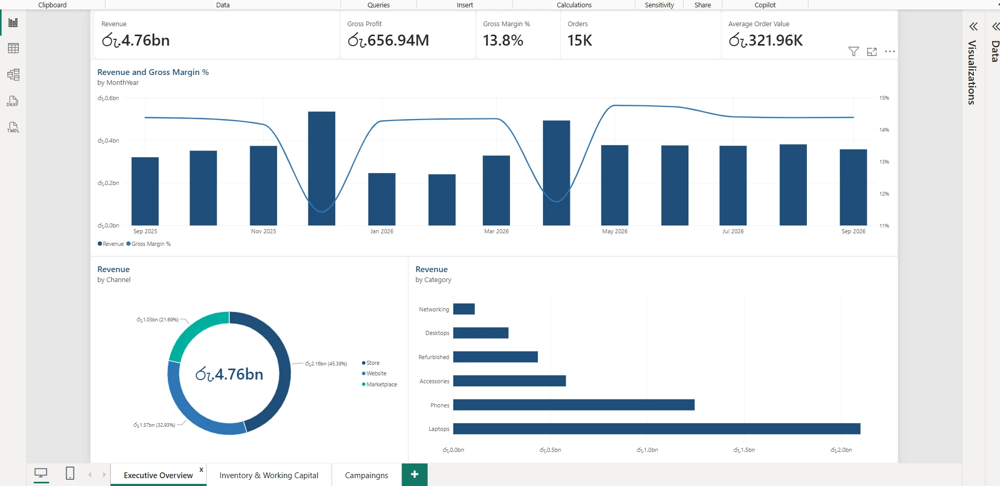

ARMN Lanka Automation
Logo for a Piliyandala supplier of spring-making machines, in colour, red and blue, and black. Plus a Sinhala ad for their machines.
Vol. 012026Colombo
Charith Sulakshana · Creative Designer
I design sail graphics, brand identities and print. At North Manufacturing I also run the laser and the plotter, so most of what I draw ends up as something you can hold.
Where
brands
begin.
Contents
66 pieces from my working folders, grouped the way I keep them.
Sail graphics
Each layout sits on the real sail shape, port side, with luff, leech and foot marked, and the artwork on its own beside it. From here the file goes to print and to the plotter for cutting.
Brand identity
A quiet identity for a travel-goods brand. The monogram tucks an S inside the B, and the wordmark is a light serif that stays readable small. Then three colourways, posts for The Travel Edit, and an eight-second reel.
The 2026 corporate calendar for North Sails and Future Fibres, built around racing photography with the brand colours running down each page. Also the cover of the North Sails Industrial Training Diary, and the cover of my own sketchbook.
Illustration
A personal series. Four gods with their faces masked, each one set inside a Greek key ring with three words underneath.
Social campaign
Fourteen Sinhala posts for a gem and jewellery shop in Malabe. Offers, gem guides by birth chart and planetary period, the nine gems of the Navaratna, and a hiring post.
Identities
An industrial machine supplier, a motorbike repair shop and a gaming streamer. Different jobs. Each one started with the logo, then the pieces the business uses day to day.
Logo for a Piliyandala supplier of spring-making machines, in colour, red and blue, and black. Plus a Sinhala ad for their machines.
Helmet and spanners for a bike repair and service shop, and an A4 flyer listing every service with a free inspection offer.
A streamer avatar drawn from a photo, then pushed into neon badges and a channel cover.
Logo boards
Presentation boards for logo concepts: travel, a dance academy, an app called Unlock, a garden brand and more. Each board shows the mark the way a client first sees it.
I'm Charith, a designer from Colombo. My day job is marine graphics and production at North Manufacturing, where I make the sail graphics, calendars and print for North Sails and Future Fibres, and run the laser cutter and vinyl plotter that turn them into real things.
Before that I freelanced for five years on Fiverr, mostly logos and brand identities for clients abroad. I also write small Illustrator scripts that take the boring steps out of prepress.
Vol. 01Case notes2026
Charith Sulakshana · Thinex Enterprises
I sit between the people who sell, stock and ship, and the data behind it. I find out what they need, map how the work actually moves, and build the report or the fix.

The real report, open in Power BI Desktop
Contents
What I've built and changed, with the screens to show for it.
Reporting
Thinex sells IT gear through stores, a website and online marketplaces, and the weekly numbers used to be put together by hand. I built this Power BI report on SQL and Power Query instead. It saves about three hours a week and it's where the inventory and campaign findings came from.
Revenue and gross margin by month, with revenue split by channel (store, website, marketplace) and by product category. This is the page management opens first.
Average stock value, turnover, days of stock and the slow-moving stock figure, plus stock value over time and by category. This is where the slow stock showed up.
Spend against revenue for each online campaign, with ROI, so the team can see which promotions to run again and which to drop.
Process
I walked an order through the business with sales, the warehouse and dispatch, and drew every step. Timing them showed three places where orders waited. We changed those three things and average processing time dropped by a quarter.
180 min per order −25%
Step timings here are illustrative. The 25% is the real average.
Side project
A dashboard I built. It streams funding rates, open interest, volume and long/short ratios for every Binance USDT perpetual pair over WebSockets (748 of them when I took these), and sends Telegram alerts when a pair crosses a threshold you set.
Systems
Smaller systems from my software diploma and freelance work, where I did the analysis and the build.
B2B platform
A machinery repair marketplace. A company logs a breakdown with the fault and how urgent it is, and a matching algorithm pairs it with a technician by location, skills, availability and track record. I modelled the database and the whole flow from job posted to technician assigned.
PHP · MySQL · JavaScript
Internal system
Role-based system for employees, departments and designations, with logins for different user types and filters to find records fast.
Java · Java GUI
Automation
Replaced a paper ordering process: browse products, apply discount rules, take payment and print the invoice.
C++
I'm Charith. At Thinex Enterprises I work between the people who sell, stock and ship things and the data that says how it's going. I gather what they need, map how the work really moves, then build the reports and fixes.
I came to this through IT administration and software work, and I'm finishing a BSc in Business Information Systems.